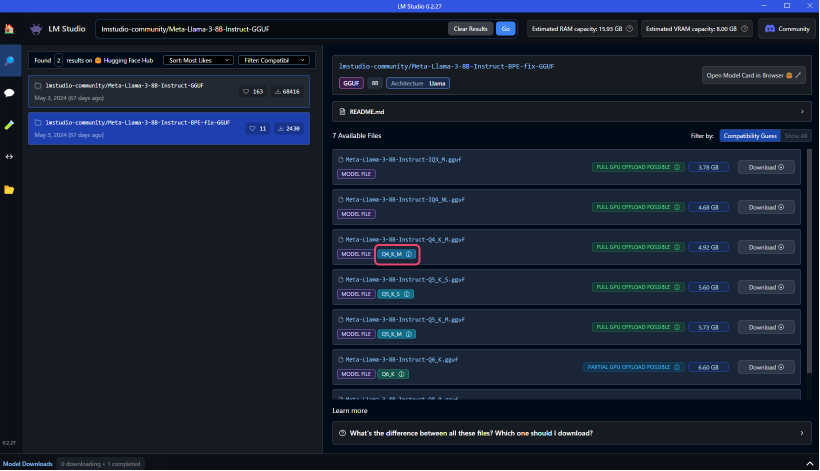
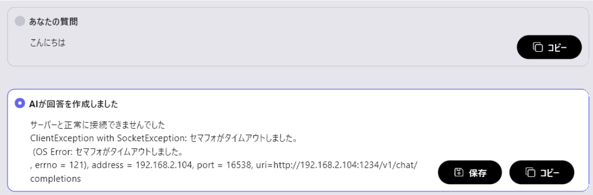
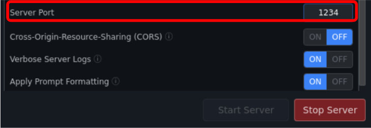

弊社推奨LLM
GPUメモリ8GB未満～8GBのPCをご利用になる場合に推奨するLLMの一覧をLLMのパラメータサイズ毎に超小型/小型/中型(それ以上)に分けて紹介します。
モデルの中にはパラメータ数の違う複数のモデルを提供しているものがあり、各モデルの名前の中にあるB(Billion)で表記されている数字から確認することができます。GPUメモリに余裕のある場合はLM Studio等からさらに上位モデルを探して使用することができます。
パラメータサイズ、RAM使用量、特徴から利用目的とPC環境にあったモデルをお選びください。（表記されているRAM使用量は量子化方式によって増減します）
超小型（0.5B ～ 4B）
Qwen/Qwen2.5-0.5B-Instruct-GGUF（RAM使用量 1.18GB～）
Qwen/Qwen2.5-1.5B-Instruct-GGUF（RAM使用量 1.27GB～）
Qwen/Qwen2.5-3B-Instruct-GGUF（RAM使用量 1.44GB～）
特徴：
アリババクラウドが提供するLLMとなっております。
英語と中国語に加えて27の言語での学習データを活用し、自然言語理解、知識獲得、コーディング、数学、多言語対応などのベンチマークで高いパフォーマンスを示しています。
0.5Bと非常に小さなモデルですので、知識量は少ないですが低スペックのPCで使用する際に最適です。
Qwen2.5では様々な専門分野での性能を大きく向上させ、多様なタスクに対応できる言語モデルとして進化しています。
DeepSeek-R1-Distill-Qwen-1.5B-GGUF（RAM使用量 1.37GB～）
特徴：
中国のDeepSeekが開発した推論能力に特化した大規模言語モデルです。推論タスク、数学問題、コーディング、長文推論、クリエイティブライティング等の主要なベンチマークにおいて主要モデルに匹敵する高いパフォーマンスを示しています。
サイバーエージェントによって日本語データによる追加学習を行った「DeepSeek-R1-Distill-Qwen-14B/32B-Japanese」が公開されています。
TinySwallow-1.5B-Instruct-GGUF（RAM使用量 1.13GB～）
特徴： 日本に拠点を置くAI企業の「Sakana AI」が発表した小規模日本言語モデルです。 TAID（時間適応型保管蒸留）と呼ばれる新しい知識蒸留手法を用いて開発され、同規模の言語モデルの中で日本語機能を評価するベンチマークテストで最高性能を示しています。 小規模言語モデルとしてスマートフォンでも動作できるほどに軽量で、リソースの限られた環境での動作が可能となっています。
lmstudio-community/gemma-2-9b-it-GGUF（RAM使用量 2.32GB～9.15GB）
bartowski/gemma-2-2b-it-GGUF（RAM使用量 1.79～3.05GB）
特徴： Gemma2は、Googleの最先端のAIモデルであるGeminiと同じアーキテクチャを用いて構築されており、 軽量でありながら高い性能を発揮します。特に270億パラメータモデルは、そのサイズクラスで最高の性能を発揮し、 2倍以上の規模のモデルに匹敵する性能を実現しています。また、90億パラメータモデルも、 同サイズの他のオープンモデルを上回る優れた性能を示しています。 また、20億パラメータモデルはサイズに対してクラス最高のパフォーマンスとなりノートPC等での活用に適します。
microsoft/Phi-3-mini-4k-instruct-gguf（RAM使用量 2.99GB程）
QuantFactory/Phi-3-mini-128k-instruct-GGUF（RAM使用量 2.08～4.54GB）
特徴： Microsoft社が提供するLLMとなっております。3.8B（38 億個のパラメータ）という非常に小型なモデルながら、 2倍以上大きいモデルと同等の性能を有しています。 現在、4Kトークンと128Kトークンに対応した2つのモデルが公開されています。
小型（7B ～ 9B）
Qwen/Qwen2.5-7B-Instruct-1M-GGUF（RAM使用量 1.97GB~）
特徴：
アリババクラウドが提供するLLMとなっております。
英語と中国語に加えて27の言語での学習データを活用し、自然言語理解、知識獲得、コーディング、数学、多言語対応などのベンチマークで高いパフォーマンスを示しています。
Qwen2.5では様々な専門分野での性能を大きく向上させ、多様なタスクに対応できる言語モデルとして進化しています。
Qwen2.5-1MはQwen2.5-Turboを元に開発されており、最大100万トークンのコンテキストの処理が可能となりました。
Qwen/Qwen2.5-7B-Instruct-GGUF（RAM使用量 1.14GB~）
特徴： アリババクラウドが提供するLLMとなっております。 英語と中国語に加えて27の言語での学習データを活用し、自然言語理解、知識獲得、コーディング、数学、多言語対応などのベンチマークで高いパフォーマンスを示しています。 Qwen2.5では様々な専門分野での性能を大きく向上させ、多様なタスクに対応できる言語モデルとして進化しています。
DeepSeek-R1-Distill-Qwen-7B-GGUF（RAM使用量 2.23GB～）
DeepSeek-R1-Distill-Llama-8B-GGUF（RAM使用量 2.04GB～）
特徴： 中国のDeepSeekが開発した推論能力に特化した大規模言語モデルです。推論タスク、数学問題、コーディング、長文推論、クリエイティブライティング等の主要なベンチマークにおいて主要モデルに匹敵する高いパフォーマンスを示しています。サイバーエージェントによって日本語データによる追加学習を行った「DeepSeek-R1-Distill-Qwen-14B/32B-Japanese」が公開されています。
mmnga/umiyuki-Umievo-itr012-Gleipnir-7B-gguf（RAM使用量 2.33～6.34GB）
特徴： Japanese-Starling-ChatV-7B、Ninja-v1-RP-expressive-v2、Vecteus-v1、Japanese-Chat-Umievo-itr004-7b4 の4モデルを統合することで完成した日本語性能の高いLLMです。
mmnga/DataPilot-ArrowPro-7B-KUJIRA-gguf（RAM使用量 2.26～3.49GB程）
mmnga/ArrowPro-7B-KillerWhale-gguf（RAM使用量 2.26～6.24GB程）
特徴： オープンソースのLLM「NTQAI/chatntq-ja-7b-v1.0」を基にして、 AIを活用したバーチャルYouTuber（AITuber）やAIアシスタントでの使用を目的に開発されました。 日本語での性能が高く、会話の品質においても高評価を得ています。 「ArrowPro-7B-KillerWhale」は「DataPilot/ArrowPro-7B-KUJIRA」の強化版という位置づけです。
mmnga/Llama-3.1-8B-Instruct-gguf（RAM使用量 2.26～5.79GB程）
特徴： Meta社が提供するこれまでで最も先進的かつ高性能なLLMとなっております。 Llama 3.1は128Kのコンテキスト長、最先端のツール使用、推論機能の強化により、長文テキストの要約、 多言語会話エージェント、コーディング支援などの高度なユースケースをサポートしています。
mmnga/Llama-3-ELYZA-JP-8B-gguf（RAM使用量 2.73～8.75GB程）
特徴： 東大松尾研究室発のAIカンパニー株式会社ELYZA(イライザ)が提供する日本語に特化したLLMとなっております。 Meta社のLlama 3 8B-Instructをベースに日本語の大規模データセットを用いて訓練され、 日本語の文法、語彙、文化的背景に精通しており、日本語特有の表現やニュアンスを正確に理解し、 洗練された日本語文章を生成することができます。
中型（それ以上）
Qwen/Qwen2.5-14B-Instruct-1M-GGUF
特徴： アリババクラウドが提供するLLMとなっております。 英語と中国語に加えて27の言語での学習データを活用し、自然言語理解、知識獲得、コーディング、数学、多言語対応などのベンチマークで高いパフォーマンスを示しています。 Qwen2.5では様々な専門分野での性能を大きく向上させ、多様なタスクに対応できる言語モデルとして進化しています。 Qwen2.5-1MはQwen2.5-Turboを元に開発されており、最大100万トークンのコンテキストの処理が可能となりました。
Qwen/Qwen2.5-14B-Instruct-GGUF
Qwen/Qwen2.5-32B-Instruct-GGUF
Qwen/Qwen2.5-72B-Instruct-GGUF
特徴： アリババクラウドが提供するLLMとなっております。 英語と中国語に加えて27の言語での学習データを活用し、自然言語理解、知識獲得、コーディング、数学、多言語対応などのベンチマークで高いパフォーマンスを示しています。 Qwen2.5では様々な専門分野での性能を大きく向上させ、多様なタスクに対応できる言語モデルとして進化しています。
DeepSeek-R1-Distill-Qwen-14B-GGUF
DeepSeek-R1-Distill-Qwen-32B-GGUF
DeepSeek-R1-Distill-Llama-70B-GGUF
特徴： 中国のDeepSeekが開発した推論能力に特化した大規模言語モデルです。推論タスク、数学問題、コーディング、長文推論、クリエイティブライティング等の主要なベンチマークにおいて主要モデルに匹敵する高いパフォーマンスを示しています。サイバーエージェントによって日本語データによる追加学習を行った「DeepSeek-R1-Distill-Qwen-14B/32B-Japanese」が公開されています。
mmnga/ELYZA-japanese-Llama-2-13b-fast-instruct-gguf （RAM使用量 6.13～14.31GB）
特徴： 東大松尾研究室発のAIカンパニー株式会社ELYZA(イライザ)が提供する日本語に特化したLLMとなっております。 Meta社のLlama 2 13Bをベースに日本語の大規模データセットを用いて訓練され、 日本語の文法、語彙、文化的背景に精通しており、日本語特有の表現やニュアンスを正確に理解し、 洗練された日本語文章を生成することができます。
※まもなくLlama3ベースの新しいELYZAモデルが公開される予定です（2024年6月27日現在）
lmstudio-community/gemma-2-27b-it-GGUF（RAM使用量 8～29.65GB）
特徴： Gemma2は、Googleの最先端のAIモデルであるGeminiと同じアーキテクチャを用いて構築されており、 軽量でありながら高い性能を発揮します。特に270億パラメータモデルは、そのサイズクラスで最高の性能を発揮し、 2倍以上の規模のモデルに匹敵する性能を実現しています。また、90億パラメータモデルも、 同サイズの他のオープンモデルを上回る優れた性能を示しています。
andrewcanis/c4ai-command-r-v01-GGUF（RAM使用量 8～10.27GB）
特徴： Command-Rは、CohereForAIが作ったLLMで、35B（350億）のパラメータが含まれています。 このモデルは、大量の情報を元に、文章を生成したり、要約したり、質問に答えたりするのが得意です。 また、最大128kトークンの長文コンテキストに対応します。
pmysl/c4ai-command-r-plus-GGUF（RAM使用量 8～212.71GB）
特徴： Command R+は、command Rの強化版となる104B（1,040億）のパラメータを含むLLMです。 このモデルはエンタープライズ向けに優れた性能を発揮するようにデザインされ、 誰でも使えるオープンソースでありながら、GPT-4 Turboに迫る性能を持っています。 また、最大128Kの長文コンテキストに対応します。
（補足）command-r-v01／Command R Plusの利用について： command-r-v01／Command R Plusは非営利目的での使用を前提に、モデルの変更や配布をおこなうLLMとなります。 商用利用（ビジネス利用）については、提供元の有償のAPIサービスを利用する必要がありますのでご注意ください。 有償APIの取得については右記サイトよりおこなっていただくことができます（https://cohere.com/command）
Qwen/Qwen2-72B-Instruct-GGUF（RAM使用量 8～148.98GB）
アリババクラウドが提供するLLMとなっております。 英語と中国語に加えて27の言語での学習データを活用し、自然言語理解、知識獲得、コーディング、数学、 多言語対応などのベンチマークで高いパフォーマンスを示しています。 7B・72Bモデルについては、最大128Kトークンまでの長文コンテキストに対応します。
mmnga/Llama-3.1-70B-Instruct-gguf（RAM使用量 7.66～9.07GB）
特徴： Meta社が提供するこれまでで最も先進的かつ高性能なLLMとなっております。 Llama 3.1は128Kのコンテキスト長、最先端のツール使用、推論機能の強化により、長文テキストの要約、 多言語会話エージェント、コーディング支援などの高度なユースケースをサポートしています。
弊社推奨LLMについての補足
推奨LLMをLMスタジオで検索いただくと、以下のように、多くのモデルが表示されるかと思います。
弊社では、サイズと性能のバランスに優れた4ビット量子化モデルの利用を推奨させていただいております。
※具体的にはQ4_K_Mの記載のあるもの、またはそれに近しい量子化がされているものとなります。

LinuxサーバーでLMスタジオを動作させる場合
LinuxサーバーでLMスタジオを動作させてailia DX insightから接続しようとした際に以下のようなエラーが表示された際はLinuxサーバーのファイヤーウォール設定でポートへのアクセスが禁止されている可能性があります。

以下のコマンドでポートをアクセスを許可してください。
sudo ufw allow 1234/tcp※上記のポート番号「1234」はLMスタジオで設定した番号に置き換えてください。
